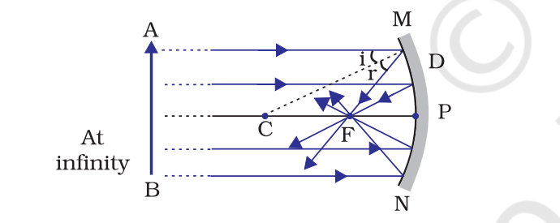
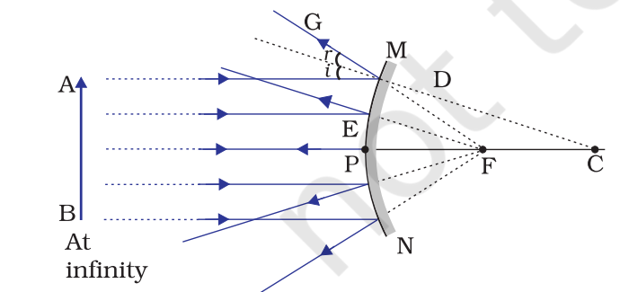
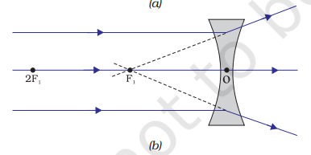
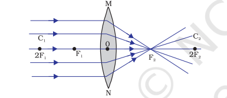

Questions answers
Reflection¶
Short answer type¶
-
State the laws of reflection.
- The angle of incidence is equal to the angle of reflection,
- The incident ray, the normal to the mirror at the point of incidence and the reflected ray, all lie in the same plane.
-
Properties of reflected image by a plane mirror.
- Image formed by a plane mirror is always virtual and erect.
- The size of the image is equal to that of the object.
- The image formed is as far behind the mirror as the object is in front of it. Or, distance b/w image and mirror = distance b/w object and mirror.
- The image is laterally inverted.
- What is diffraction of light.
- If an opaque object on the path of light becomes very small, light has a tendency to bend around it and not walk in a straight line – an effect known as the diffraction of light.
- Define spherical mirrors, concave and convex mirrors.
- Mirrors whose reflecting surfaces are spherical are called spherical mirrors.
- A spherical mirror, whose reflecting surface is curved inwards, that is, faces towards the centre of the sphere, is called a concave mirror.
- A spherical mirror whose reflecting surface is curved outwards, is called a convex mirror.
- Tip: Don't forget to mention that it is a "spherical mirror" when defining concave and convex mirrors.
- Define and state the features of centre of curvature.
- The reflecting surface of a spherical mirror forms a part of a sphere. This sphere has a centre. This point is called the centre of curvature of the spherical mirror.
- The centre of curvature is not a part of the mirror. It lies outside its reflecting surface.
- For a concave mirror, centre of curvature lies in front of it. However, it lies behind the mirror in case of a convex mirror.
- Define pole of a mirror.
- The centre of the reflecting surface of a spherical mirror is a point called the pole.
- It lies on the surface of the mirror.
- Give two definitions for radius of curvature.
- (main definition) The radius of the sphere of which the reflecting surface of a spherical mirror forms a part, is called the radius of curvature of the mirror.
- The line distance between the pole and centre of curvature of the mirror.
- Define principal axis of a mirror.
- An imaginary straight line passing through the pole and the centre of curvature of a spherical mirror is called the principal axis.
- The principal axis is normal (At 90°) to the mirror at its pole.
- Define principal focus of concave and convex mirror.
- Incident rays parallel to the principal axis, after reflecting, intersect at a point on the principal axis. This point is the principal focus of concave mirror.
- Incident rays parallel to the principal axis, after reflecting, appear to emerge from a point on the principal axis. This point is the principal focus of concave mirror.
- Tip: Here, the parallel rays must be mentioned as incident rays as well, because rays being parallel while incident (before reflecting) and rays being parallel while reflected (after reflection) are two different cases
- Define focal length.
- The distance between the pole and the principal focus of a spherical mirror is called the focal length. It is represented by the letter \(f\).
- Define aperture.
- The diameter (length between two opposite ends) of the reflecting surface of spherical mirror is called its aperture.
- The relationship between radius of curvature and focal length.
- For spherical mirrors of small apertures, the radius of curvature is found to be equal to twice the focal length. We put this as \(R = 2f\).
- What is the condition required for \(R = 2f\) to hold, for a spherical mirror?
- The aperture of the spherical mirror should be much smaller compared to the radius of curvature.
- Where is the principal focus located, 1) in terms of center of curvature, 2) in terms of effect of mirror on rays of light?
- Principal focus of a spherical mirror lies midway between the pole and centre of curvature.
- Point on principal axis where parallel incident rays of light meet or appear to emerge from, after reflection from concave or convex mirror respectively.
- Uses of concave mirrors and the property used behind it.
- Torches, search-lights or headlights - to get powerful parallel beams of light - using rays starting from focus reflecting to become parallel rays.
- Shaving mirrors, dental mirrors - makes use of enlarged virtual image when object is placed between focus and pole.
- Focus sunlight for heating - uses the principle of parallel rays of light reflected and converging to principal focus.
- Uses of convex mirrors and the property used behind it.
- rear-view mirrors - object at finite distance produces diminished virtual image, and hence shows wider range of view on a smaller area (within the mirror's aperture).
- Define the mirror formula.
- (you should always state the meaning of the variables when defining formulas)
- Let u be the distance of the object from its pole, called the object distance. Let v be the distance of the image from the pole of the mirror, called the image distance. Let f be the focal length. The signs of the variables are according to the spherical mirror sign convention.
- The formula is: \(\frac{1}{v} + \frac{1}{u} = \frac{1}{f}\)
- Define magnification and it's formula.
- Magnification produced by a spherical mirror gives the relative extent to which the image of an object is magnified with respect to the object size.
- It is expressed as the ratio of the height of the image to the height of the object.
- \(m = \frac{Height \; of \; the \; image \; (h')}{Height \; of \; the \; object \; (h)}\)
- \(m = \frac{h'}{h}\)
- What is the relation between the sign of magnification and whether the image is real or virtual?
- Negative magnification - real.
- Positive magnification - virtual.
- Give the formula for magnification in terms of i) heights from axis, ii) distances from origin.
- with heights: \(m = \frac{Height \; of \; the \; image \; (h')}{Height \; of \; the \; object \; (h)}\)
- with distances: \(m = - \frac{v}{u}\)
Long answer type¶
- Draw diagram and label different parts of a concave mirror.
- 
- P - pole
- F - principal focus
- C - centre of curvature
- CP - radius of curvature
- FP - focal length
- MN - aperture
- \(\angle i\) - Angle of incidence
- \(\angle r\) - Angle of reflection
- Draw diagram and label different parts of a convex mirror.
- 
- P - pole
- F - principal focus
- C - centre of curvature
- PC - radius of curvature
- PF - focal length
- MN - aperture
- \(\angle i\) - Angle of incidence
- \(\angle r\) - Angle of reflection
- State the 4 important different ways in which rays reflect off concave mirrors.
- A ray parallel to the principal axis, after reflection, will pass through the principal focus in case of a concave mirror or appear to diverge from the principal focus in case of a convex mirror.
- A ray passing through the principal focus of a concave mirror or a ray which is directed towards the principal focus of a convex mirror, after reflection, will emerge parallel to the principal axis.
- A ray passing through the centre of curvature of a concave mirror or directed in the direction of the centre of curvature of a convex mirror, after reflection, is reflected back along the same path.
- A ray incident at the pole obliquely to the principal axis, is reflected obliquely, according to laws of reflection.
- in other words, A ray incident on the pole reflects according to the laws of reflection with normal along the principal axis.
- State the rules of the new cartesian sign convention for spherical mirrors.
- (Unlikely that they will ask such a question, but you should know the rules properly)
Refraction¶
Short answer type¶
- Define refraction.
- When travelling obliquely from one medium to another, the direction of propagation of light in the second medium changes. This phenomenon is known as refraction of light.
- What is the manner in which light bends, between mediums of different optical density?
- Rarer to denser medium - refracted ray bends towards the normal.
- Denser to rarer medium - refracted ray bends away from the normal.
- (Hint: Think of it as this: in denser medium, light is slower. so for light to "catch up", it bends towards normal to travel less oblique and more straight, to cover less distance. Vice versa for denser to rarer, it got too fast so to cover less distance in that time, it travels more bent.) Of course this is not a completely accurate analogy but it helps to give an intuition, instead of byhearting that "lesser to denser = bend towards normal" etc.
- State the laws of refraction.
- Define refractive index between two mediums and it's formula. Also give formula for absolute refractive index of a single medium.
- Explain what is optical density.
- State the two types of spherical lenses and 2 of their properties each.
- What is special about the optical centre of a spherical lens?
- Define i) centres of curvature, ii) principal axis, iii) optical centre, iv) aperture, v) principal foci, vi) focal length.
- What is the method to locate the principal focus of a convex lens?
- If you pass parallel rays from the opposite surface of the lens, you get another principal focus on the opposite side of the convex lens.
- What is the peculiarity of sign convention for lenses when it comes to focal length? What is the reason for it?
- Focal length of convex mirrors is positive, while for concave it is negative.
- This is peculiar coz the foci for both lenses are in both sides, so how do we know which one to choose?
- We can solve this by realizing that, fundamentally, sign convention considers the direction of light as positive.
- And we have considered light to go from left to right in ray diagrams, for convenience.
- Now, imagine parallel rays of light hitting the lens. For convex, it converges at the focus on the right side, towards the direction of light. For concave, the rays of light emerge from the focus, so from the optical centre, you have to move backwards from the direction of light to reach the focus. So this is considered as negative length.
- Also another reason is that considering convex focal length as positive and concave as negative simply makes things easier to manage, so there you go.
- What is the lens formula?
- This formula gives the relationship between object distance (u), image-distance (v) and the focal length (f).
- \(\frac{1}{v} - \frac{1}{u} = \frac{1}{f}\)
- What is the formula for magnification in terms of i) distances, ii) heights?
- For object distance (u), image distance (v), \(m = \frac{v}{u}\)
- For image height (h'), object height (h), \(m = \frac{h'}{h}\)
- State the definition of power of a lens.
- The degree of convergence or divergence of light rays achieved by a lens is power.
- It is numerically equal to the reciprocal of the focal length.
- Its formula is \(P = \frac{1}{f}\)
- What is the numerical definition of power?
- It is numerically equal to the reciprocal of the focal length.
- SI unit of power.
- Dioptre (D). Equivalent to \(m^{-1}\).
- What are the signs of powers of different lenses?
- Convex - positive, concave - negative.
- How do you calculate the total power of a combination of lenses?
- For a series of lenses (kept very close to each other preferably), their powers can be added up linearly.
- Two lenses of focal length f1 and f2 are placed close together. How do you calculate the total focal length?
- Use the lens power sum formula, but represent power as inverse of focal lengths.
- \(P_{total} = P_1 + P_2\)
- \(\frac{1}{f_{total}} = \frac{1}{f_1} + \frac{1}{f_2}\)
For object position - image position relations¶
- In which situation does convex lens give virtual and erect image?
- When object is between focus F1 and optical centre O.
- Where is the object positioned if the image is highly diminished, point-sized, real, and inverted?
- When the object is at infinity.
- In which situation does a convex lens produce a diminished, real, and inverted image?
- When the object is beyond 2F1.
- When does a convex lens create an image that is the same size as the object, real and inverted?
- When the object is at 2F1.
- Under what condition is the image enlarged, real, and inverted for a convex lens?
- When the object is between F1 and 2F1.
- When does a convex lens form an infinitely large or highly enlarged, real, and inverted image?
- When the object is at focus F1.
- In which situation does a convex lens produce an enlarged, virtual, and erect image?
- When the object is between focus F1 and the optical centre O.
- Where is the object if the image is between F2 and 2F2, diminished, real, and inverted?
- When the object is beyond 2F1.
- How is the image positioned if the object is at focus F1?
- At infinity.
- What is the nature of the image if the object is at 2F1?
- The image is at 2F2, same size, real, and inverted.
- When does a convex lens form a real and inverted image, positioned beyond 2F2?
- When the object is between F1 and 2F1.
- In which scenario does a convex lens form an image on the same side as the object?
- When the object is between focus F1 and the optical centre O.
- How is the image characterized if the object is placed at infinity?
- The image is at focus F2, highly diminished, point-sized, real, and inverted.
- What is the position of the image when the object is between F1 and 2F1?
- Beyond 2F2.
- How does a convex lens form an image if the object is at focus F1?
- The image is at infinity, infinitely large or highly enlarged, real and inverted.
- Where is the image formed if the object is positioned beyond 2F1?
- Between F2 and 2F2.
- Where is the image formed when the object is at infinity?
- At focus F2.
- Where is the image located if the object is beyond 2F1?
- Between F2 and 2F2.
- What is the position of the image when the object is at 2F1?
- At 2F2.
- Where is the image when the object is between F1 and 2F1?
- Beyond 2F2.
- Where does the image appear if the object is at focus F1?
- At infinity.
- Where is the image formed when the object is between focus F1 and the optical centre O?
- On the same side of the lens as the object.
- Where is the image formed when the object is at infinity?
- At focus F1.
- Where is the image located if the object is between infinity and the optical centre O?
- Between focus F1 and the optical centre O.
- In which situation does a concave lens give a highly diminished, point-sized, virtual, and erect image?
- When the object is at infinity.
- In which situation does a concave lens produce a diminished, virtual, and erect image?
- When the object is between infinity and the optical centre O.
Long answer type¶
- Draw diagram and label different parts of a concave lens.
- 
- O - optical centre
- F1 - principal focus
- 2F1 = C1 - centre of curvature
- OC1 - radius of curvature
- OF1 - focal length
- MN - aperture
- Draw diagram and label different parts of a convex lens.
- 
- O - optical centre
- F1 - principal focus
- 2F1 = C1 - centre of curvature
- OC1 - radius of curvature
- OF1 - focal length
- MN - aperture
- Explain the 3 lens ray diagram rules, with diagrams.